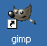

GIMP操作基础教程
作者：Teliute 来源：基础教程网
一、安装和运行 返回目录
GIMP是一个免费的GNU图像处理软件，跟Photoshop软件类似，使用它可以很方便地处理图片，我们来学习一下安装的方法；
1、下载和安装
1）对于Ubuntu操作系统，安装好Ubuntu后，系统中已经安装了GIMP软件，点上面板栏的菜单“应用程序－图像－GIMP图片编辑器”，就可以运行它；
2）对于Windows系统，可以在一些大的下载网站中下载，然后安装到系统中，可能要先安装GTK+环境包才能正常安装；
华军下载：http://www.onlinedown.net/soft/25687.htm3）安装完成后，在桌面和开始菜单中都有一个小狐狸图标的快捷方式，双击即可运行；

2、运行
1）启动GIMP后，先出来一个启动扩展和搜索插件，过一会就出来两个长条面板；
2）GIMP的窗口是由两个独立的面板组成，并没有框在一个窗口中，这样更有利于灵活操作；
3）第一次运行还有一个“日积月累”对话框中，可以去掉下面的勾，然后关闭它，这样下次就不再出现这个面板；

以后点菜单“帮助－日积月累”，还可以重新打开它；
本节学习了在GIMP的安装和运行的 基本方法，如果你成功地完成了练习，请继续学习下一课内容；本教程由86团学校TeliuTe制作|著作权所有，商业用途请与作者联系
基础教程网：http://www.laxjyj.com/teliute/
美丽的校园……
转载和引用本站内容，请保留版权信息和本站链接。